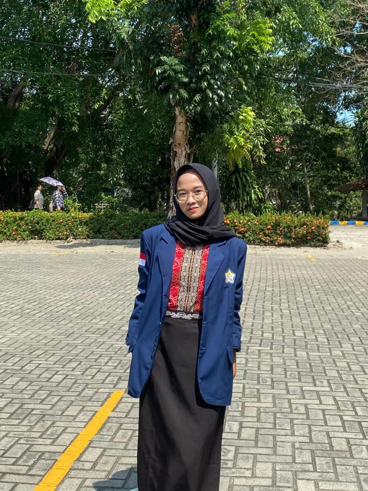

Data Diri

Nama: Denisa Karina Azzahra
NPM: A1D024029
Program Studi: Pendidikan Biologi
Materi Biologi
PENGERTIAN MEIOSIS
- Meiosis adalah pembelahan sel yang berlangsung dalam dua kali pembelahan dan menghasilkan empat sel anakan Masing-masing sel anakan ini mengandung separuh kromosom dari jumlah kromosom induknya. Pembelahan meiosis terjadi pada waktu pembentukan gamet-gamet.
- Meiosis (dari bahasa Yunani yang berarti "berkurang") adalah salah satu jenis pembelahan sel yang terjadi pada organisme yang bereproduksi secara seksual untuk memproduksi sel gamet seperti sperma maupun sel telur. Ciri utama dari meiosis adalah prosesnya terjadi dalam dua tahapan pembelahan.
File
Download file berikut:
Video
Tonton video berikut: